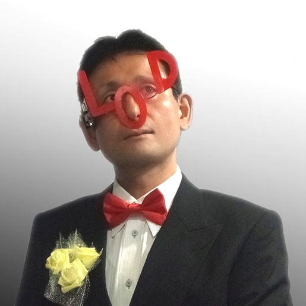

LODチャレンジJapan実行委員会とは
LODチャレンジJapan実行委員会は「Linked Open DataチャレンジJapan」を開催するために集まった有志による組織です。
オープンデータおよびLinked Open Dataの公開と活用のためのコミュニティ形成と技術の普及促進を目的として活動しています。
実行委員募集中！
LODチャレンジJapan実行委員会では、一緒に活動して頂ける方を随時募集しています。
地方在住の方も、オンラインでご参加頂くことができます。
データ活用やコンテスト運営に興味のある方、様々な分野の方とのつながりを作りたい方は、ぜひご参加ください。
お問い合わせ先：LODチャレンジJapan実行委員会 事務局 office@lodc.jp
2020年度 実行委員会メンバー
-

審査委員長
武田 英明
国立情報学研究所
-

実行委員長／副審査委員長／関西支部長
古崎 晃司
大阪電気通信大学
-

事務局長
大向 一輝
東京大学
-

副実行委員長
加藤 文彦
Linked Open Data Initiative
-

顧問
下山 紗代子
一般社団法人リンクデータ
-

浅野 優
株式会社日立製作所
-

江上 周作
-

遠藤 守
名古屋大学
-

太田 啓介
横浜ホイールマップ
-

兼松 篤子
中京大学
-

込山 悠介
国立情報学研究所
-
朱 成敏
国立情報学研究所
-

鈴木 孝幸
神奈川工科大学
-

中山 圭太郎
中山データベース合同会社
-

林 正洋
京都市役所
-
槇 俊孝
NTT研究所
-
光石 豊
放送大学
-
山中 勇樹
-
渡邊 勝太郎
科学技術振興機構